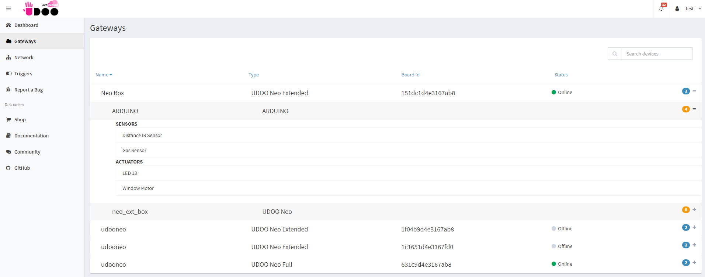
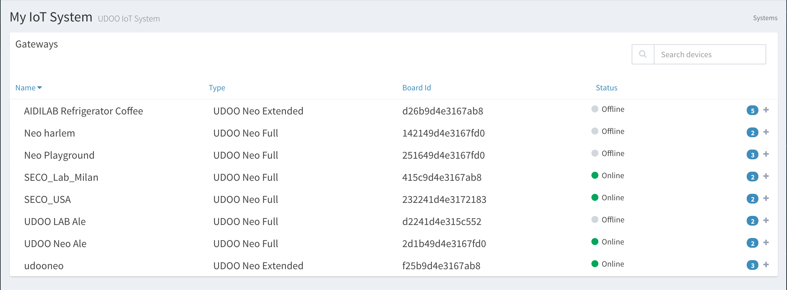
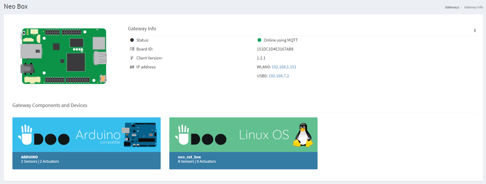

UDOO IoT Documentation
UDOO IoT Documentation
Gateways
The Gateways section shows an overview of the IoT system status.
The screen gives, by default, the current status of all the gateways, clicking on the + icon is possible to see the devices connected at every gateway and its sensors, as shown in the figure.

Gateways
Here are shown all the gateways connected to the account

Clicking on one of it, you access to a dedicated screen, where you can find all the info about the selected gateway, the event logs and all the connected devices.

Clicking on the 3-dot menu and then on Edit you can modify the name and the gateway and set it an alias.
From the 3-dot menu you can also manage other features of the Gateway such as:
- Restart All Services: If you detect some connection issues, try to restart the Services (udoo-iot-cloud-client) installed.
- Set Geolocation: To set the geolocation of the Gateway and check the pin in the Dashboard map.
- Scan for UDOO Blu: Scan the BLE network of the Gateway to connect a new wireless UDOO BLU that will send data of the sensor to this Gateway.
-
Scan for Open Z-Wave: If you have connected an USB Z-Wave receiver stick to the Gateway, you can scan the network to automatically identify Open Z-Wave nodes and control it by the UDOO Cloud.
Here you can find some info about the Z-Wave protocol, the Open Z-Wave implementation and a list of all the compatible device supported. - Delete Gateway: Delete the Gateway registration in the UDOO Cloud account.
Deleting Gateway
Clicking on the 3-dot menu and then on Delete Gateway you proceed to the deletion, and so you have to register again the board with your IoT Account
To confirm the deletion, you must enter the gateway name in the confirmation form

Devices
Clicking on the + icon, it’s possible to see the connected devices at every gateway
Selecting one, you can see the characteristics.